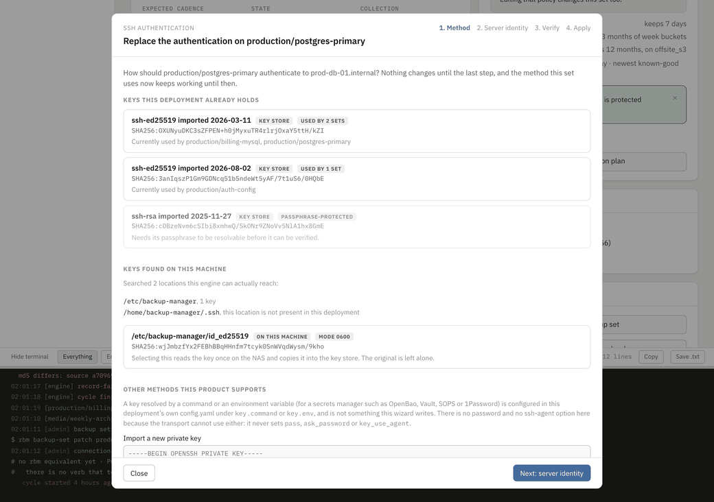
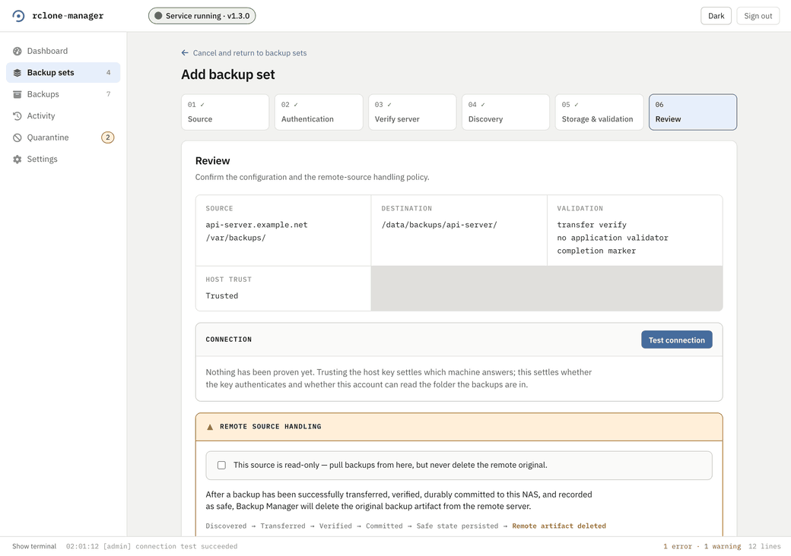

SSH keys, and proving a source
There are two different questions hiding inside "is this connection set up", and until 0.3.3 the interface only ever asked the first one. Which machine answered is settled by a host key. Whether this account can actually pull backups out of that folder is settled by connecting with the key, authenticating, and listing the folder. A set could be saved with the first one green and the second one never asked.
The key wizard
What #592 replaced was two text boxes, both write-only. One asked an operator to paste "the id of an imported key", and a key id is a uuid the product showed exactly once, in the response to the import that created it, so the box was a blank you filled in with something you would have had to write down months ago. The other asked for a known_hosts line, which is the same problem one layer down.
The wizard's first step is the answer to both. It lists the keys this deployment holds, each with its fingerprint, when it was imported and which backup sets are using it. Under that it lists the keys it can find on the machine, with the locations it searched named and the ones that are not present said out loud rather than silently skipped. On a default install the installer generated <prefix>/secrets/id_ed25519 and Compose mounted it read-only, so there is exactly one key sitting there and this is the surface that finally offers it. Pasting a key is still available and it is the last option rather than the only one.

Why step two goes through the refusal rather than around it
A wizard is exactly the kind of thing that quietly acquires a trust-on-first-use default in the name of being friendly. This one does not. It probes, it shows the comparison against what this backup set's own known_hosts already pins, and the only way past a mismatch is ticking an acknowledgement. The acknowledgement is scoped to the fingerprint that was shown: a later probe that returns something else clears it, so ticking never grants "trust whatever answers next".
A wizard that trusted whatever answered would not be easier to use. It would be a wizard that cannot tell your rebuilt VPS from somebody else's server.
Why the check has four results and not one
"It connected" is the answer that hides the three failures an operator actually hits. Failing to authenticate with the host key green means the public half is not in the remote authorized_keys, and the fix is one line to paste. Failing to list with authentication green means the account works and cannot read the folder, which is a permissions problem on the source and has nothing to do with keys. One red sentence makes those indistinguishable, and that is how somebody ends up regenerating a keypair to fix a chmod.
Apply stays unavailable until the run comes back clean, and it is disarmed by any change to what was verified: the wizard records the exact key and host line the greens were about, so editing either after a pass turns Apply off rather than letting a green stand for values nobody checked. Clean is the engine's own verdict and never a count of green rows, because a step is allowed to be skipped and a wizard that counted rows would have called a set with no key at all a pass.
Proving a source before anything relies on it
#624 is the gap on the other side. The add-backup-set wizard gated its save on a pinned known_hosts line and an imported key, and both of those are host identity. Neither says whether the key authenticates or whether the account can read the folder, so a set could be created, enabled and scheduled on a connection nobody had ever made.
The review step now says so in as many words before the check runs, and none of the three save buttons is available. After it comes back clean the same panel says the source has been proven and saving is enabled.

The destination side has worked this way for a while and the source side is copying its shape rather than inventing a second one. backupd medium add verifies by default and --no-verify is an explicit opt-out that says nothing was proven. backupd backup-set create and backupd backup-set patch now do the same, and a set written with --no-verify stays marked unverified until a connection test passes.
backupd backup-set test-connection production/postgres-primarySix named outcomes and a non-zero exit when any of them fails. Beside a serving engine the check is made by that engine, so its steps reach the live feed rather than only your terminal; with nothing serving, it is made where you typed it.
What never appears, in either direction
A private key. The key store listing carries ids, fingerprints and public halves and no paths. The candidate scan carries paths, because a candidate's path is its identity to an operator, and the handle it hands back is opaque. Selecting a candidate imports it server-side, which means key material never crosses the network at all, and the original file on the machine is left alone.
There is no password option and no ssh-agent option, and that is a property of the transport rather than an omission: it never sets pass, ask_password or key_use_agent. A key resolved by a command or an environment variable, which is how a secrets manager fits in, is configured in config.yaml under key.command or key.env and is not something this wizard writes.
The pictures on this page hold no key material either. The paste box is photographed empty and the fingerprints are fixtures.